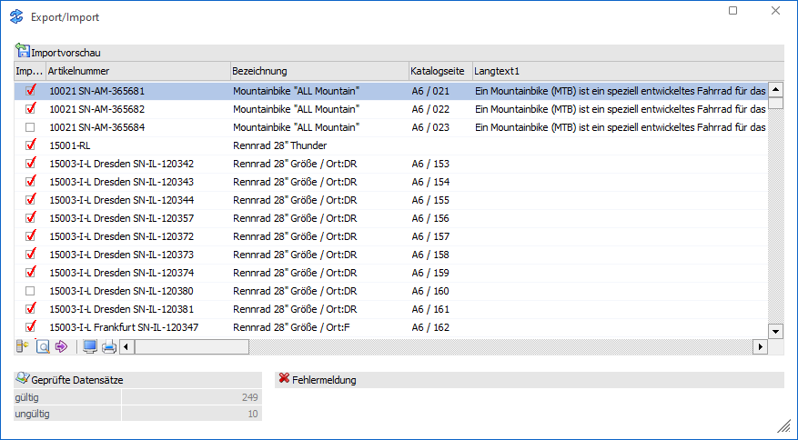
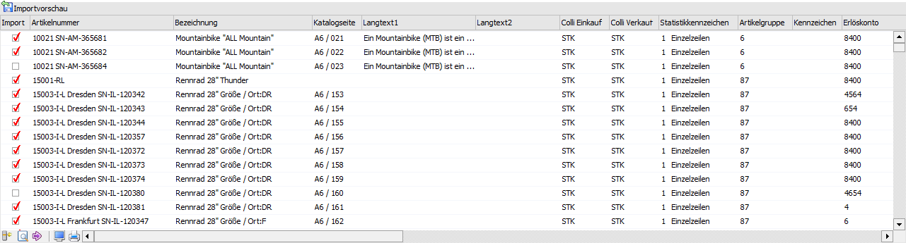
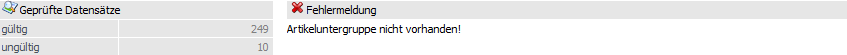
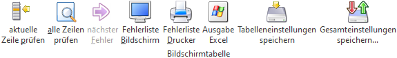
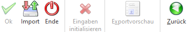

Durch das Ausführen der Importvariante "Sätze vor Import editieren" können sämtliche Datensätze, vor dem endgültigen Einlesen in die WinLine Datenbank, in einer separaten Bearbeitungstabelle editiert bzw. kontrolliert werden.

Die Datensätze in der Tabelle sind abhängig von der zuvor getätigten Selektion, der verwendeten Vorlage und der Importquelle. Der Import selbst kann durch Anwahl des Buttons "Import" gestartet werden.
Tabelle "Importvorschau"

Die Spalte der Importtabelle sind abhängig von der Vorlage. Zusätzlich wird die Spalte "Import" zur Verfügung gestellt.
Ø Import
Über die Selektion innerhalb der Spalte "Import" kann optional die Ab- und Anwahl bestimmter Datensätze erfolgen.
Info

Unterhalb der Importvorschau werden folgende Informationen angezeigt:
Ø Geprüfte Datensätze (gültig/ungültig)
Es wird innerhalb der Importvorschau angezeigt, wie viele Datensätze gültig (fehlerfrei) und wie viele ungültig sind.
Ø Fehlermeldung
Wenn in der Importdatei Fehler enthalten sind (z.B. falsche Preisliste, ungültige BKZ, Kontonummer nicht im festgelegten Bereich etc. …), dann wird dies als Fehlermeldung angezeigt.
Tabellenbuttons

Ø aktuelle Zeile prüfen
Die derzeit im Fokus stehende Zeile der Importvorschau wird hinsichtlich etwaiger Fehler überprüft.
Ø alle Zeilen prüfen
Nachdem diverse Änderungen/Anpassungen innerhalb der Importvorschau vorgenommen worden sind, können alle enthaltenen Datensätze durch Anwahl dieses Buttons erneut geprüft werden.
Ø nächster Fehler
Sind mehrere Fehler vorhanden, können diese nacheinander begutachtet werden. Dabei wird durch Klicken auf diesen Button der Fokus auf den nächsten fehlerhaften Datensatz gelegt. Sind alle Fehler in den zu importierende Datensätzen bereinigt, dann ist der Button "inaktiv".
Ø Fehlerliste Bildschirm
Über diesen Button können enthaltene Fehler über ein EXIM-Fehlerprotokoll am Bildschirm ausgegeben werden. Darin wird Bezug auf die Zeile, den Eintrag und die Fehlermeldung genommen.
Ø Fehlerliste Drucker
Über diesen Button können enthaltene Fehler in einem EXIM-Fehlerprotokoll am definierten Drucker ausgegeben werden. Darin wird Bezug auf die Zeile, den Eintrag und die Fehlermeldung genommen.
Ø Ausgabe Excel
Durch Anwahl des Buttons "Ausgabe Excel" wird der Inhalt der Tabelle an Microsoft Excel übergeben.
Ø Tabelleneinstellungen speichern
Die Spalten einer Tabelle können grundsätzlich an beliebige Positionen verschoben, bzw. in der Breite entsprechend angepasst werden. Durch Anwahl des Buttons "Tabelleneinstellungen speichern" werden die Einstellungen benutzerspezifisch gespeichert und bei dem nächsten Aufruf des Programmpunktes wieder vorgeschlagen.
Ø Gesamteinstellungen speichern
Im Gegensatz zu "Tabelleneinstellungen speichern" können mit "Gesamteinstellungen speichern" mehrere Tabellenaufbauten gespeichert und nach Wunsch geladen werden. Zusätzlich werden Sonderfunktionen der Tabelle (z.B. "Spalte gruppieren") ebenfalls bei der Speicherung bedacht.
Buttons

Ø Ok (nicht bei Importvorschau)
Durch Anwahl des Buttons "Ok" bzw. der Taste F5 wurde die Importvorschau gestartet.
Ø Import
Dieser Button startet das Einlesen der Datensätze in die WinLine Datenbank. Hierbei werden folgende Punkte durchgeführt:
ü Prüfung
Es findet zunächst eine
Prüfung der Datensätze statt, bei der die Datensätze (nach den erforderlichen
Richtlinien der WinLine Applikationen) geprüft werden (z.B. ob die BKZ
gültig/angelegt ist, ob die Preisliste gültig ist, ob ungültige Sonderzeichen in
einem der Datenfelder enthalten sind, etc. …).
ü Ungültige Datensätze
Ungültige
Datensätze werden für den Importlauf automatisch deaktiviert, d.h. das Häkchen
in der Spalte "Import" wird entfernt.
ü Import
Alle gültige Datensätze
werden importiert. Nach erfolgtem Import gibt die WinLine eine Meldung aus, wie
viele Datensätze importiert wurden und wie viele Datensätze als "fehlerhaft"
deklariert worden sind.
Hinweis
Werden ungültige Datensätze gefunden, so gibt es die Möglichkeit, diese Datensätze in einem Bearbeitungsfenster zu korrigieren bzw. die Fehler zu beheben. Korrigierte Datensätze können anschließend importiert werden.
Ø Ende
Durch Drücken des Buttons "Ende" bzw. der Taste ESC wird das Fenster geschlossen, alle Einstellungen verworfen und kein Import durchgeführt.
Ø Eingaben initialisieren (nicht bei Importvorschau)
Durch Anklicken dieses Buttons werden alle getätigten Import-Einstellungen verworfen, wodurch eine neue Selektion durchgeführt werden kann.
Ø Exportvorschau (nicht bei Importvorschau)
Durch Drücken des Buttons "Exportvorschau" werden in einem neuen Fenster die Datensätze, welche auf Grund der vorgenommenen Einstellungen exportiert werden würden, angezeigt.
Hinweis
Eine Bearbeitung der Datensätze ist nicht möglich.
Ø Zurück
Befindet man sich in der Exportvorschau oder der Importvorschau, so kann durch Anwahl des Buttons "Zurück" wieder in das Hauptfenster des EXIMs zurückgewechselt werden.